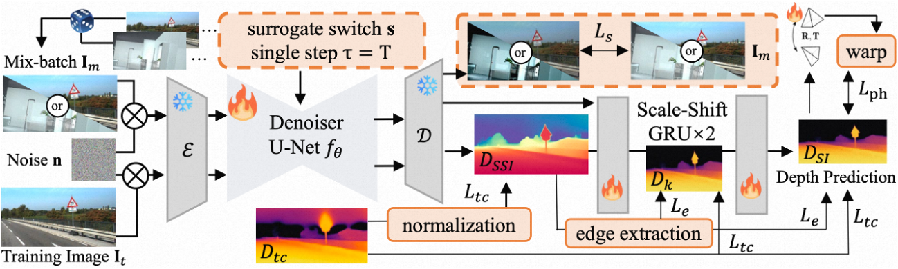

In this paper, we propose Jasmine, the first Stable Diffusion (SD)-based self-supervised framework for monocular depth estimation, which effectively harnesses SD’s visual priors to enhance the sharpness and generalization of unsupervised prediction. Previous SD-based methods are all supervised since adapting diffusion models for dense prediction requires high-precision supervision. In contrast, self-supervised reprojection suffers from inherent challenges (e.g., occlusions, texture-less regions, illumination variance), and the predictions exhibit blurs and artifacts that severely compromise SD's latent priors.
To resolve this, we construct a novel surrogate task of mix-batch image reconstruction. Without any additional supervision, it preserves the detail priors of SD models by reconstructing the images themselves while preventing depth estimation from degradation. Furthermore, to address the inherent misalignment between SD's scale and shift invariant estimation and self-supervised scale-invariant depth estimation, we build the Scale-Shift GRU. It not only bridges this distribution gap but also isolates the fine-grained texture of SD output against the interference of reprojection loss.
Extensive experiments demonstrate that Jasmine achieves SoTA performance on the KITTI benchmark and exhibits superior zero-shot generalization across multiple datasets.
The gallery below presents several qualitative comparisons of Jasmine with previous state-of-the-art methods.

Jasmine is the first framework to successfully finetune a pre-trained Stable Diffusion model using only self-supervised signals from video sequences. The framework consists of two key components: Mix-batch Image Reconstruction (MIR) and Scale-Shift GRU (SSG). MIR preserves SD's powerful visual priors by training the model on a surrogate image reconstruction task, preventing the priors from being corrupted by noisy reprojection losses. SSG bridges the distributional gap between the scale-shift-invariant depth from SD and the scale-invariant depth required by self-supervised methods, while also filtering noisy gradients to protect fine details.
Despite being trained with zero ground-truth depth labels, Jasmine achieves state-of-the-art performance on the KITTI benchmark among all self-supervised methods. It also demonstrates remarkable zero-shot generalization capabilities, outperforming both self-supervised and fully-supervised baselines on multiple unseen datasets like CityScapes and DrivingStereo, even under adverse weather conditions.

Refer to the PDF paper linked above for more details on qualitative, quantitative, and ablation studies.
@article{wang2025jasmine,
title={Jasmine: Harnessing Diffusion Prior for Self-supervised Depth Estimation},
author={Wang, Jiyuan and Lin, Chunyu and Guan, Cheng and Nie, Lang and He, Jing and Li, Haodong and Liao, Kang and Zhao, Yao},
journal={arXiv preprint arXiv:2503.15905},
year={2025}
}